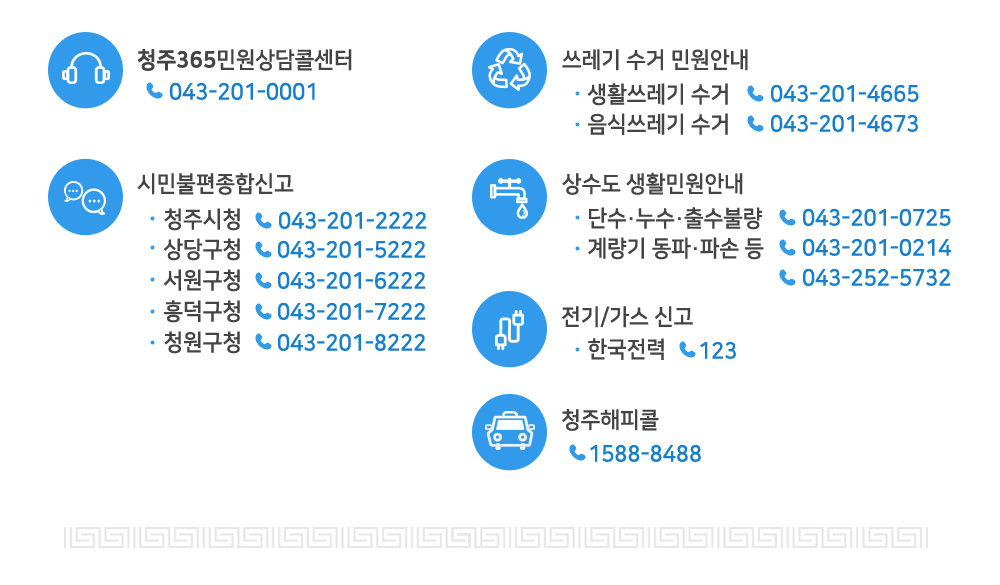

탭메뉴
2018년 설 명절 연휴기간 주요 생활민원
주요 민원번호 안내

청주365 콜센터
- 대표번호 043-201-0001
- 운영시간 365일(평일 8:00 ~ 20:00 / 토·일·공휴일 9:00 ~ 18:00)
- 안내내용 전문상담사를 통한 시정상담 및 생활불편민원 접수 등
※ 교통, 환경, 시정일반, 행정지원, 농업정책, 복지, 세무 등
시민불편 종합신고
- 운영기간 ‘18. 2. 15(목) ~ ’18. 2. 18(일), 4일간
- 운영장소 시⦁구청 당직실, 24시간, 4명 근무
- 운영내용
- 연휴기간 중 비상지료 병의원, 약국 현황 등 안내
- 상·하수도, 전기·가스, 쓰레기, 교통 등 각종 생활민원
- 교통사고, 화재, 응급환자 등 각종 사건·사고
- 구제역·AI 등 가축질병 의심 신고 및 문의 등
생활(음식물) 쓰레기 수거안내
- 운영기간 2018. 02. 14. ~ 02. 19. (6일간)
- 수거대상 생활쓰레기(일반쓰레기, 재활용 등), 음식물쓰레기
- 안내내용 043-201-4665(생활), 4673(음식물)
일자별 수거 일정
| 구 분 | 2.14 | 2.15 | 2.16 | 2.17 | 2.18 | 2.19 | 비 고 |
|---|---|---|---|---|---|---|---|
| 생 활 | 수거 | 수거 | 미수거 | 수거 | 미수거 | 수거 | |
| 음식물 | 수거 | 수거 | 미수거 | 수거 | 미수거 | 수거 |
상수도 생활민원안내
- 안내 043-201-0725(단수·누수·출수불량), 043-201-0214, 043-252-5732(계량기)
- 내용 단수, 누수, 출수불량, 계량기(고장, 파손, 부동, 동파)
공원묘지 및 장례식장 안내
| 시설명 | 연락처 | 소재지 |
|---|---|---|
| 목련공원 | 043-270-8574 | 상당구 목련로 731(월오동) |
| 매화공원 | 043-270-7320 | 상당구 가덕면 상장인차로 460 |
| 장미공원 | 043-270-7330 | 청원구 오창읍 양청3길 88 |
| 청주시장례식장 | 043-291-4444 | 상당구 목련로 731(월오동) |
설연휴 기간 장사시설 운영(2월16일 화장장 휴관, 민원실 업무만 가능)
2018년 설 명절 연휴기간 주요 교통정보
교통종합상황실
- 운영기간 ‘18. 2. 15(목) ~ ’18. 2. 18(일), 09:00 ~ 18:00
- 전화번호 043-201-2811~3, 043-201-2865~6
청주해피콜 운행안내
- 운행기간 ‘18. 2. 15(목) ~ ’18. 2. 18(일), 4일간
- 운행내용 26대 / 06:00 ~ 익일 01:00까지 운행
- 예약 및 문의 1588-8488
심야운행버스정보(터미널-오송역간)
- 노선명 747
- 경로 KTX오송역-청청대학-시외버스터미널

고속/시외버스 증회 운행 (청주발 기준)
- 운행기간 ‘18. 2. 14(수) ~ ’18. 2. 18(일), 5일간
고속버스 주요노선 증회 운행
- 주요노선 증회 운행계획 6노선 175회 ⇒ 215회 (증 40회)
| 노 선 | 현 행 | 증 회 | 계 | 비고(업체) |
|---|---|---|---|---|
| 합 계 | 175 | 40 | 215 | |
| 청 주 ~ 서울(강남) | 111 | 19 | 130 | 속리산, 중앙 |
| 청 주 ~ 동서울 | 25 | 4 | 29 | 속리산, 중앙 |
| 청 주 ~ 상 봉 | 2 | 3 | 5 | 중앙 |
| 청 주 ~ 부 산 | 9 | 5 | 14 | 속리산, 한일 |
| 청 주 ~ 대 구 | 12 | 4 | 16 | 속리산, 삼화 |
| 청 주 ~ 광 주 | 16 | 5 | 21 | 속리산, 금호 |
※ 수송수요에 따라 탄력적 조정 운영
시외버스 주요노선 증회 운행
- 주요노선 증회 운행계획 7노선 129회 ⇒ 206회 (증 77회)
| 노 선 | 현 행 | 증 회 | 계 | 비고(경유) |
|---|---|---|---|---|
| 계 | 129 | 77 | 206 | |
| 오창 ~ 서울(남부) | 13 | 13 | 26 | |
| 북청주 ~ 서울(남부) | 19 | 10 | 29 | |
| 북청주 ~ 서울(센트럴) | 12 | 12 | 24 | |
| 청주 ~ 서울(남부) | 55 | 20 | 75 | |
| 청주 ~ 서울(센트럴) | 15 | 15 | 30 | |
| 속리산 ~ 서울(센트럴) | 4 | 4 | 8 | 보은, 청주 |
| 청주 ~ 전주 | 11 | 3 | 14 |
※ 수송수요에 따라 탄력적 조정 운영
불법 주․정차 특별 지도단속 소통관리
- 운영기간 ‘18. 2. 15(목) ~ ’18. 2. 18(일), 4일간
- 단 속 반 구청 교통지도팀
- 단속방법 주요 간선도로, 대형쇼핑몰 및 터미널 등 혼잡지역 지도단속
- 단속문의
공원묘지 경유 안내
- 증회기간 : ‘18. 2. 15(목) ~ ’18. 2. 18(일), 4일간
2018년 설 명절 연휴기간 주요 문화행사
문화행사·전시·공연
어린이회관, 동물원
- 운영기간 : ‘18. 2. 15(목) ~ ’18. 2. 18(일), 3일간 ⇒ ※ ‘18. 2. 16.(금) 휴관
- 운영안내 : 043-201-4863, 장소(청주랜드관리사업소)
- 근무시간 : 09:00 ~ 18:00, 근무인원(16명)
- 행사 또는 이벤트 안내 : 명절기간 행사계획 없음, 평시운영
예술의전당
뮤지컬콘서트
- 일 시 : 18. 2. 18. 16시
- 장 소 대공연장
- 내 용 국내 최정상 뮤지컬 배우들과 함께하는 콘서트(홍지민, 김소현 출연)
- 관 람 비 R석 99,000, S석 77,000, A석 66,000
- 공연문의 ㈜피앤씨플랜, 043)211-8626
스케이트장.썰매장
- 운영안내 043-260-4761
- 장 소 청주시 서원구 청주야구장 뒤편 실외스케이트장.썰매장
- 운영기간 ‘18. 2. 15(목) ~ ’18. 2. 18(일), 4일간
- 운영시간
- 오전 10시 ~ 오후 9:30
- ※ 2.16(설날) 오후1시부터 운영
- ※ 강우, 폭설, 미세먼지농도 심각시 (조기휴장) 탄력적운영
- 이용금액 2시간 – 2,000원( 스케이트.썰매 구분없이)
- 주차안내 실외스케이트장 주변, 예술의전당 주차장, 야구장 주변
청주고인쇄박물관
- 안내전화 043-201-4266/043-260-2503
- 운영기간 ‘18. 2. 15(목) ~ ’18. 2. 18(일), 3일간
※ 2. 16.(금) 설날 당일 휴관 - 운영내용 청주고인쇄박물관 근현대인쇄전시관, 금속활자전수교육관
국립청주박물관
- 기 간 2. 15. (목) ~ 2. 18. (일) /*2. 16. (금) 휴관
- 장 소 박물관 일원
- 행 사
- 전통놀이 한마당,
- 가족영화상영
- 전통 탈 놀이극- 떡보와 아리랑 다섯 고개 호랭이
- 맛있는 인절미 만들기와 떡메치기
- 전통문양 비누만들기
전시
특별전 『국립청주박물관, 동행 30년』
- 내 용 30년 동안 박물관에서 이루어졌던 여러 발자취의 기록들을 전시
2018년 박물관전통문화교실 수강생 작품전
- 내 용 서각, 닥종이 인형, 한국화 등 2017년 박물관 전통문화교실 수강생들의 전통공예품 전시
제8회 사진공모전 ‘마주보기’ 수상작 전시회
- 기 간 2017. 12. 19. (화)
- 내 용 박물관 사진전
2018년 설 명절 연휴기간 전통시장 안내
전통시장 주차 안내
| 시 장 명 | 주소 | 주차면수 | 운영시간 | 비 고 |
|---|---|---|---|---|
| 육거리 | 상당구 청남로2197번길 42(1주차장) | 41 | 09:00~18:00 | 운영시간외무료개방 |
| 상당구 청남로2189번길 26-1(주차타워) | 151 | 09:00~18:00 | 운영시간외무료개방 | |
| 북부 | 청원구 우암동 347-7(2주차장) | 23 | 09:00~17:30 | 운영시간외무료개방 |
| 청원구 향군로31번길 19(1주차장) | 11 | 09:00~17:30 | 운영시간외무료개방 | |
| 사창 | 서원구 창신로26번길 27-1 | 46 | 무료개방 | |
| 사직 | 서원구 사직동 558-38 | 25 | 09:00~18:00 | 운영시간외무료개방 |
| 가경터미널 | 흥덕구 가경동 1286 | 52 | 09:00~18:00 | 운영시간외무료개방 |
| 복대가경 | 흥덕구 신율로139번길 59-1 | 31 | 09:00~18:00 | 운영시간외무료개방 |
| 직지시장 | 흥덕구 직지대로653번길 93 | 33 | 무료개방 | |
| 내수시장 | 청원구 내수읍 내수본길 8 | 77 | 무료개방 | |
| 서문시장 | 상당구 남사로89번길 57 | 30 | 무료개방 | |
| 성안길상점가 | 상당구 사직대로362번길 98-6 | 121 | 10:00~21:30 | 운영시간외무료개방 |
전통시장 상시 주정차 운영(구간안내)
- 운영기간 : 상시 운영
- 운영안내 : 문의 ☎ 043-201-1383
운영구간 및 대상(전통시장 이용객에 한해 주차시점부터 2시간 이내)
| 구청별 | 경찰서 | 시장명 | 주 소 | 허용구간 | 연장(km) | 편측/양측 |
|---|---|---|---|---|---|---|
| 상당구 | 상당서 | 미원시장 | 청주시 상당구 미원면 미원시내2길 | 미원파출소 ~ 미원사거리 | 0.2 | 양측 |
| 서원구 | 상당서 | 원마루시장 | 청주시 서원구 원마루로 14번길 2 | 용평교사거리~방서교삼거리 | 0.6 | 양측 |
| 청원구 | 청원서 | 내수시장 | 청주시 청원구 내수읍 마산3길 | 주공(아)입구 ~ 내부소방파출소 | 0.5 | 양측 |
전통시장 한시 주정차 운영(구간안내)
- 운영기간 : 2018. 2. 5.(월) ~ 2. 17.(일)
- 운영안내 : 문의 ☎ 043-201-1383
운영구간 및 대상(전통시장 이용객에 한해 주차시점부터 2시간 이내)
| 구청별 | 경찰서 | 시장명 | 주 소 | 허용구간 | 연장(km) | 편측/양측 |
|---|---|---|---|---|---|---|
| 상당구 | 상당서 | 육거리시장 | 청주시 상당구 청남로2197번길 | 청남교 ~ 탑웨딩홀 | 0.41 | 양측 |
| 서원구 | 상당서 | 두꺼비시장 | 청주시 서원구 수곡로58번길 | 한마음약국 ~ 한마음1차(아) | 0.3 | 양측 |
| 흥덕구 | 흥덕서 | 농수산물시장 | 청주시 흥덕구 백봉로 254 | 한우식당 ~ 부흥유통 | 0.3 | 편측 |
| 복대가경시장 | 청주시 흥덕구 풍산로 117 | 유니온베이 ~ 코코다 | 0.2 | 편측 | ||
| 가경터미널시장 | 청주시 흥덕구 풍년로160번길 | 백두산원예 ~ 흥덕한의원 | 0.3 | 편측 | ||
| 상당구 | 상당서 | 육거리시장 | 청주시 상당구 청남로2197번길 | 청남교 ~ 탑웨딩홀 | 0.41 | 양측 |
| 금석교4거리 ~ 연합신경외과 | ||||||
| 청원구 | 청원서 | 북부시장 | 청주시 청원구 우암동 345-2 | 피보사랑약국 ~ 국민상조 | 0.2 | 편측 |